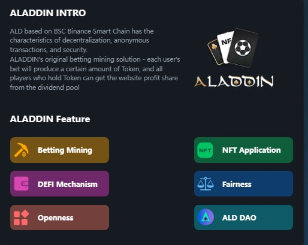
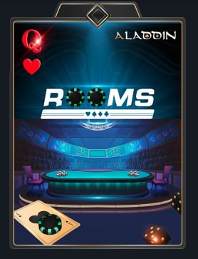
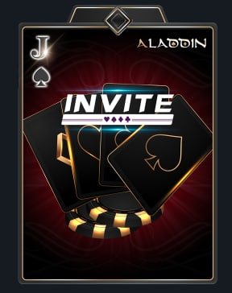
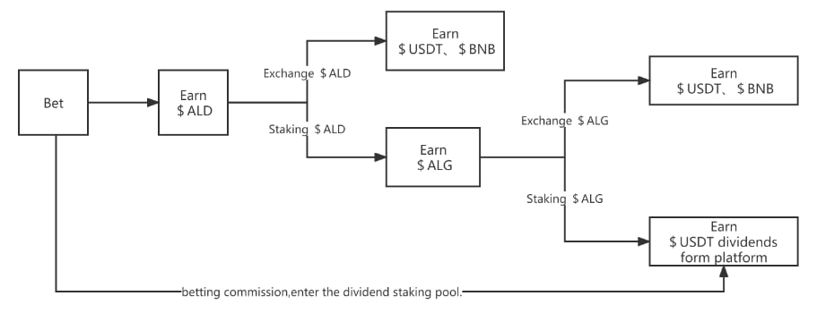

مشروع ALADIN Bet منصة ويب 3.0 لامركزية قائمة على شبكة بينانس سمارت تشين (Smart Chain). تعد هذه المنصة أول منصة ألعاب في العالم تدعم كل من التكنولوجيا اللامركزية و اللعب اللامركزي. شعارها الأساسي هو "BetToEarn" حيث يمكن للاعبين اللعب و الرهان على ألعاب و رياضات مختلفة باستخدام العديد من العملات الرقمية كما يمكن أيضاً استخدام العملات الرقمية الثابتة القيمة(BUSD-USDT).
تدعم المنصة :
اللعب و التعدين : في أي لعبة رهان يكون للمراهنة أهمية قصوى حيث عندما يراهن اللاعبون و وفقًا لمبلغ الرهان الخاص بهم سيتم مكافئتهم بعملة ALD.
قابلية استخدام كروت NFT : من خلال امتلاك كروت خاصة NFT يمكن للمستخدم أن يكون المصرفي (Banker) المتحكم بقبول و رفض الرهانات و تحديد الحدود الدنيا و العليا لقيمة الرهان كما سيكون بإمكانه إنشاء غرفة الرهان الخاصة به و دعوة مستخدمين آخرين للمراهنة على ما يختاره.
القيام بكل ما يدخل ضمن DEFI : حيث سيكون المستخدمين قادرين على القيام بعمليات الستيك (Staking) و الفارم (Farming) لعملات المنصة (ALD-ALG) بهدف التعدين مثلا يمكن تخزين و قفل عملة ALD للحصول على عملة الحوكمة ALG الخاصة بالمنصة كما يمكن قفل و تخزين عملة ALG للحصول على أرباح بالعملة الثابتة USDT.
التصويت DAO الخاص بالمنصة : حيث يركز الفريق المطور على إدخال و مشاركة المستخدمين بعملية صنع القرار و تقرير مستقبل المنصة من خلال نظام التصويت DAO. يقوم المستخدمين بتخزين عملة الحوكمة ALG للحصول على نقاط التصويت vALG و المشاركة من خلالها بعملية صنع القرار.
الألعاب التي ستدعمها المنصة :
حاليا بعد الانطلاق الرسمي للمشروع سيتوفر ثلاثة ألعاب رئيسية يمكن للمستخدمين الاستمتاع بها و الربح منها هي تكساس بوكر Texas Poker , بلاك جاك Blackjack و باكارات Baccarat. أيضا سيتمكن المستخدمين من وضع الرهانات على رياضة كرة القدم لمختلف الدوريات العالمية الكبرى و العادية بالإضافة إلى حدث كأس العالم عند انطلاقه.
أرباح كافة الألعاب السابقة و الرهانات ستكون من خلال عملة ALD و سيتم توليد العملة بعد الفوز مباشرةً.
كروت ال NFTs :
يوفر المشروع للمستخدمين 4 أنواع مختلفة من كروت ال NFT بحيث يمكن الحصول عليها من خلال المشاركة بالإحداث و الفعاليات التي ستقوم بها المنصة, الأيردروبات و من خلال الشراء المباشر من الماركت ما عدا النوع الرابع الذي سيتم الحصول عليه من خلال برنامج تدريب خاص و سيكون عدده محدود جداً.
.jpg)
كرت المصرفي (Banker NFT) : يعطيك صلاحيات المصرفي و الممول لغرفة الرهان بحيث تكون قادر على قبول و رفض المشاركين. عدد القطع التي سيتم عرضها من هذا الكرت غير محدد.
كرت إنشاء غرفة (Room Creator NFT) : يعطيك صلاحية إنشاء غرفة خاصة للعب مع الأصدقاء أو غرفة للرهان كما يسمح بتحديد العملة المستخدمة بالرهان و كذلك تحديد قيمة الرهان. مالك هذا الكرت يحصل على بونص إضافي 90% من قيمة أرباح المشاركين بالغرفة. عدد القطع التي سيتم عرضها من هذا الكرت غير محدد.
كرت دعوة (Invitation NFT) : يعطيك صلاحية دعوة أصدقائك إلى غرفة اللعب أو المراهنة التي قمت بإنشائها كما أن مالك هذا الكرت يحصل على بونص إضافي يعادل 50-80% من الأرباح التي يحصل عليها الأشخاص الذين قام بدعوتهم. و عدد القطع التي سيتم عرضها للبيع من هذا الكرت هو 3000 قطعة فقط.
كرت جينيسيس (Genesis NFT) : يعطي هذا الكرت لمالكه كافة الصلاحيات التي تعطيها الكروت الثلاثة السابقة بالتالي فإن امتلاكه يعادل امتلاك الكروت الثلاثة مجتمعة.
عملات المشروع :
يدعم المشروع عملتين (ALD-ALG) قائمتين على شبكة بينانس سمارت تشين. يمكن للمستخدمين تخزين ALD للحصول على ALG . ثم تخزين ALG للحصول على عملة USDT الثابتة وفق المخطط التالي.
عملة ALD :
عدد القطع غير محدود و هي تعتبر عملة الربح من المنصة أي أن المستخدمين سيكافئون بهذه العملة عند الفوز و الرهان و يمكن استخدامها لشراء ال NFT من المنصة أو تخزينها للحصول على عملة الحوكمة ALG. عندما يصل عدد القطع لدى المستخدمين إلى 1 مليار سيطبق الفريق آلية خاصة لحرق عدد كبير من القطع للحفاظ على قيمة العملة و سيكون للمستخدمين المشتركين بالتصويت DAO دور كبير في تقرير كمية و نسبة الحرق.
عملة ALG :
و هي عملة الحوكمة الخاصة بالمنصة و لها الدور الأكبر في الحفاظ على اللامركزية و ضمان حق المستخدمين في المشاركة بعملية صنع القرار و تقرير مستقبل المنصة و تطويرها و ستتميز هذه العملة بعدم وجود آلية للشراء المسبق حيث ستكون الطريقة الوحيدة للحصول عليها هو قفل و تخزين عملة ALD بعد انطلاق المشروع. امتلاك هذه العملة يؤمن للمستخدمين حق التصويت في ال DAO و ربح عملة USDT مدى الحياة.
الورقة البيضاء الخاصة بالمشروع :
يمكن الإطلاع عليها بالتفصيل من خلال >الرابط
خارطة الطريق Road map :
الربع الرابع من 2022 :
الانطلاق الرسمي للمشروع
بدء العمل بنظام التصويت DAO
إطلاق حدث كأس العالم
إدراج عملات المشروع على منصة لامركزية و الحصول على موافقة مبدئية مع منصة مركزية
إطلاق برنامج لدعم المستخدمين الأوفياء
الربع الأول من 2023 :
إطلاق نظام لتصنيف اللاعبين ضمن لعبة البوكر
الإدراج على منصة مركزية مهمة
عقود رعاية مع دوريات عالمية مثل WPT-APT
الربع الثاني من 2023 :
إجراء العديد من الشراكات الاستراتيجيه
إطلاق حدث كأس العالم بلعبة البوكر
تقديم عملة المنصة في مواقع المراهنات العالمية مثل Crown-365
•إطلاق كازينو ضمن العالم الافتراضي بتقنية 3D
ملاحظة : ترتيب و تسلسل هذه الأحداث ضمن خريطة الطريق خاضع للتغير تبعاً للظروف و الأحداث الاقتصادية العالمية و متغيرات السوق لكن الفريق ملتزم بإتمام كل ما هو وارد في خارطة الطريق.